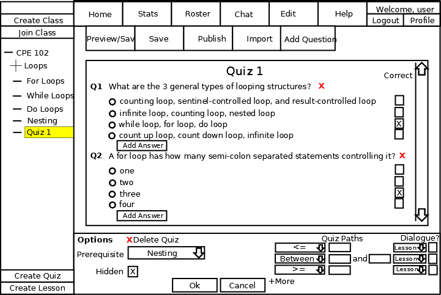
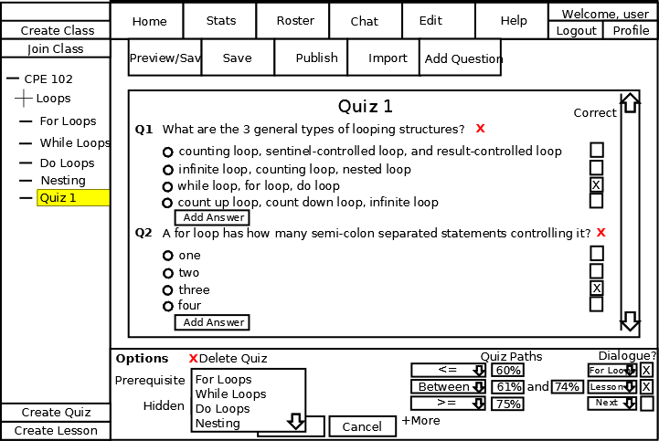

The quiz editor is accessible to instructors or other privileged users for creating, editing, and deleting quizzes. In spirit of automated feedback, CSTutor only supports multiple choice, true or false, or code snippet questions. However, the instructor may wish to create several versions of the quiz in order to avoid repeat questions. .
The instructor is also able to set and edit properties of the quiz, such as prerequisites. With prerequisites, the instructor can identiy which quizzes must be completed before being able to take the quiz. In some instances, an instructor may wish to make all quizs available immediatly in order to demonstrate knowledge in the subject without needing to go through the lessons. In other instances, an instructor may wish to unlock quizs and make them visible as previous quizzes are completed in order to create a flow for the course material.
Another feature of the quiz editor is the capabilities to use paths. With quiz paths, the instructor can direct the student to a particular lesson based on the students score. For example, if a student scores below 50%, the student may be required to retake the lesson. If the student scores between 51% and 75%, the student is encouraged to review the material before moving forward. If the student scores between 76% and 100%, the student is automatically directed to the next lesson in the series.
To create a quiz, the instructor presses the 'Create Quiz' button. In response, the system generates a blank quiz as shown in Figure 2.3.2.1-1.
Figure 2.3.2.1-1: Creating a quiz.
The figure shows the result of the blank quiz after having hit the 'Create Quiz' button.
After having created a blank quiz question, the instructor can then title the quiz. To do this, the instructor clicks into the text box showing 'Quiz 1' and enters in the desired name. This name is a standard string.
To add a multiple choice question, the instructor hits the 'New Multiple Choice Question' button. In response, the system generates a blank question as shown in Figure 2.3.2.2-1.

Figure 2.3.2.2-1: Adding a Multiple Choice Question.
The figure shows the result of the blank quiz after having hit the 'Add New Multiple Choice Question' button. The added elements are strings for the question title and the question. There is also a button below the question for adding a possible answer.
After having created a blank question, the instructor can than edit the question title or prompt. To do this, the user must click into the text box showing 'Enter Question Here' and replace it with the question being asked. After typing in the question, the instructor then needs to provide options for the answers to the multiple choice question. To add a possible answer, the user must hit the 'Add New Answer' button as shown in Figure 2.3.2.2-2.

Figure 2.3.2.2-2: Adding an Answer.
The system will then generate a blank answer. This includes an text field for the answer, as well as a radio button indicating if this answer is the correct answer or not. This is shown in Figure 2.3.2.2-3.

Figure 2.3.2.2-3: Blank Answer.
After adding a blank answer, the instructor then needs to fill in the text for the answer. To do this, the user must click into the text field reading 'Sample Answer' and replace it with the neccessary text. The final step in adding a question is to identify the correct answer. This is done by selecting the radio button next to the correct answer. The result of the instructor adding a multiple choice question with 4 different possible answers is shown in figure 2.3.2.2-4.

Figure 2.3.2.2-4: Comepleted Multiple Choice Question.
To remove a question, the instructor must hit the 'X' button next to the question being deleted.

Figure 2.3.2.4-1: Question Deletion Confirmation.
In response, the system will display a dialog confirming the deletion of the question as shown in Figure 2.3.2.4-2.

Figure 2.3.2.4-1: Question Deletion Confirmation.
To confirm deleting the question, the instructor must select the 'Yes' button. To cancel the question deletion, the instructor can select the 'No' button.
To delete a quiz, the instructor must hit the
'Delete' button as shown in Figure 2.3.2.5-1.

Figure 2.3.2.5-1: Quiz Deletion Button.
In response, the system will display a dialog confirming the deletion of the question as shown in Figure 2.3.2.5-2.
Figure 2.3.2.5-2: Quiz Deletion Confirmation.
To confirm deleting the quiz, the instructor must select the 'Yes' button. To leave the quiz, the instructor must select the 'No' button and no deletion will be made. Once a quiz is deleted, all associated student statistics are also removed. This operation cannot be undone.
To direct the student to different sections of CSTutor based on their result from the quiz, the user can specify an unlimited number of quiz paths by editing the 'Quiz Paths' fields as shown in Figure 2.3.2.5-1. In response, the system directs the student to the specified lesson after submitting the quiz and receiving their grade.

Figure 2.3.2.5-1: Quiz Paths.
First, the instructor must select the appropriate mathematical symbol from the drop down menu. The options are '<', '<=', '=', 'Between', '>', and '>='. After selecting the operator, the instructor must fill in the blank values with the numerical values, such as '< 65%'. Next, the instructor must select the lesson to be directed at by clicking in the 'Lesson' dropdown. In response, the system displays all available lessons pages. Finally, the user can specify if they would like a dialogue to be displayed. To do this, the user must check the 'Dialogue?' checkbox. In response, the system displays a window asking you for the prompt as shown in Figure 2.3.2.4-2.

Figure 2.3.2.4-2: Dialogue Prompt.
This prompt will be displayed to the student if they fall within that particular grading threshold. Figure 2.3.2.4-3 shows a completed quiz pointers section.

Figure 2.3.2.4-3: Example Quiz Paths.
In this sample, if the student scores below 60% he is met with a friendly dialogue explaining that they need to retake the lesson, and are brought back to the beginning of the lesson. If the student scores between a 61% and 74%, he is not directed anywhere and is prompted that he is encouraged to retake the lesson but will not be forced to retake it. Finally, if the student scores 75% or above, he is not given a dialogue and is brought to the next lesson.
To require a quiz as a prerequisite, the instructor must click into the dropdown box labelled 'Prerequisite'. In response, the system displays a menu containing all available quizzes as shown in Figure 2.3.2.5-1.

Figure 2.3.2.5-1: Prerequisite Dropdown.
The instructor then selects the appropriate quiz to require as a prerequsite.
To make the quiz hidden to students until they have successfully completed all prerequisites, the instructor can check the 'Hidden' box. In response the system makes the quiz unreachable by any student until all prerequisites have been satisfied. If prerequisites have been set, as described here, but the instructor chooses not to hide the quiz, the quiz and its questions will be viewable by students, but students can not submit answers until all prerequisites have been met.